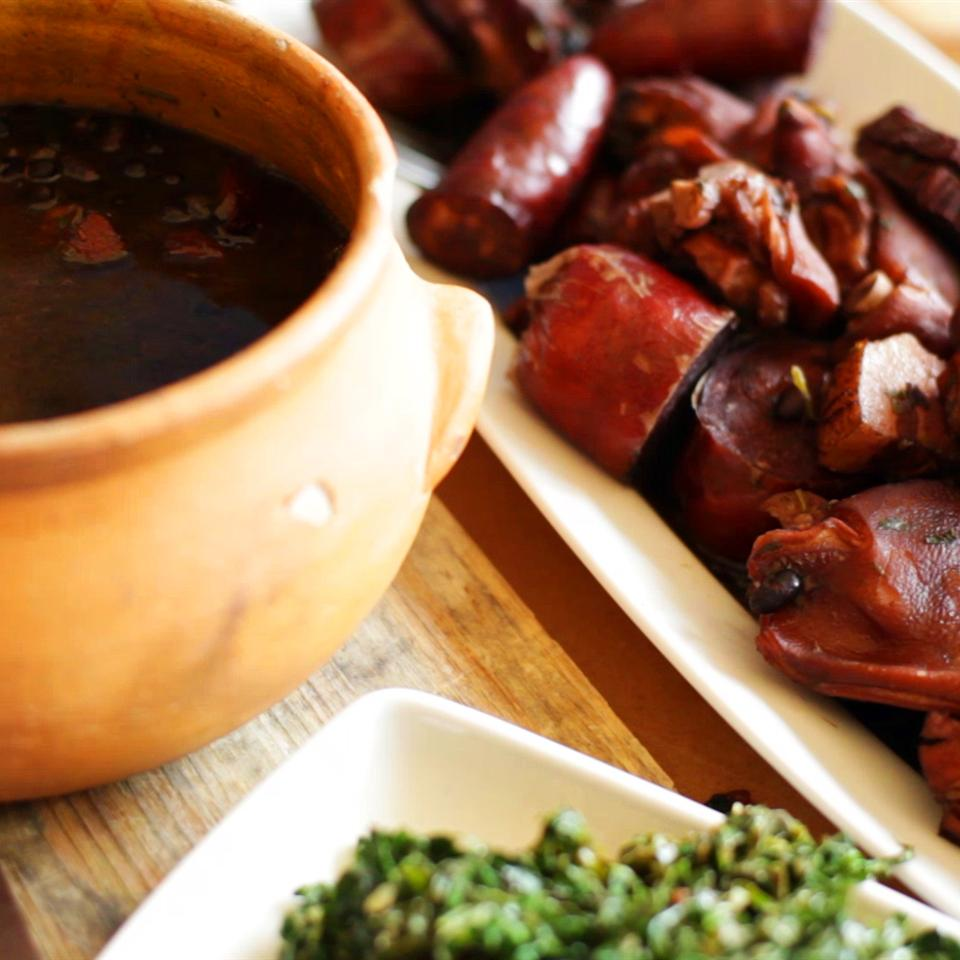

Home
Feijoada (Bean Stew)

Description
A very traditional Brazilian stew made with black beans, sausage,
and all the tasty bits of pork. For a traditional Brazilian spread,
serve hot with white rice and collard greens.
Ingredients
- 8 quarts water, divided
- 2 pounds dried black beans, rinsed
- 4 bay leaves
- salt and ground black pepper to taste
- 1 pound dried beef, cut into pieces
- 1/2 pound smoked pork ribs
- 2 unsalted pig's feet
- 1 smoked sausage, cut into pieces
- 1 pound spicy sausage, cut into pieces
- 1/2 pound bacon, cut into large pieces
- 1/4 pound pork belly, cut in half
- 1 unsalted pig's ear, cut into thirds
- 2 unsalted pig's tails
- 2 tablespoons vegetable oil
- 4 cloves garlic, chopped
- 1/2 pound bacon, cut into small pieces
- 2 onions, chopped
- 2 bunches fresh parsley, chopped
Steps
-
Combine 6 quarts water, black beans, bay leaves, salt, and
pepper in a large saucepan. Bring to boil; simmer for 50 minutes.
-
Bring remaining 2 quarts water to boil in a large saucepan.
Stir in dried beef, pork ribs, and pig's feet; simmer until flavors
combine, about 25 minutes. Add smoked sausage, spicy sausage, large
bacon pieces, pork belly, pig's ear, and pig's tails; simmer until meat
mixture is softened, about 25 minutes.
-
Stir meat mixture to the bean mixture; simmer until flavors combine,
about 45 minutes.
-
Heat vegetable oil in a large skillet over medium heat; add garlic.
Cook until warmed through, about 45 seconds; transfer to bean mixture.
Add small bacon pieces to the skillet; cook and stir until lightly
golden, about 2 minutes. Stir in onion; cook until onion is soft and
browned, about 5 minutes. Stir in parsley.
-
Stir the onion mixture into the bean mixture; simmer until tender,
about 25 minutes. Transfer meat mixture to a serving dish. Pour beans
into a separate serving dish.
🔙 Go back